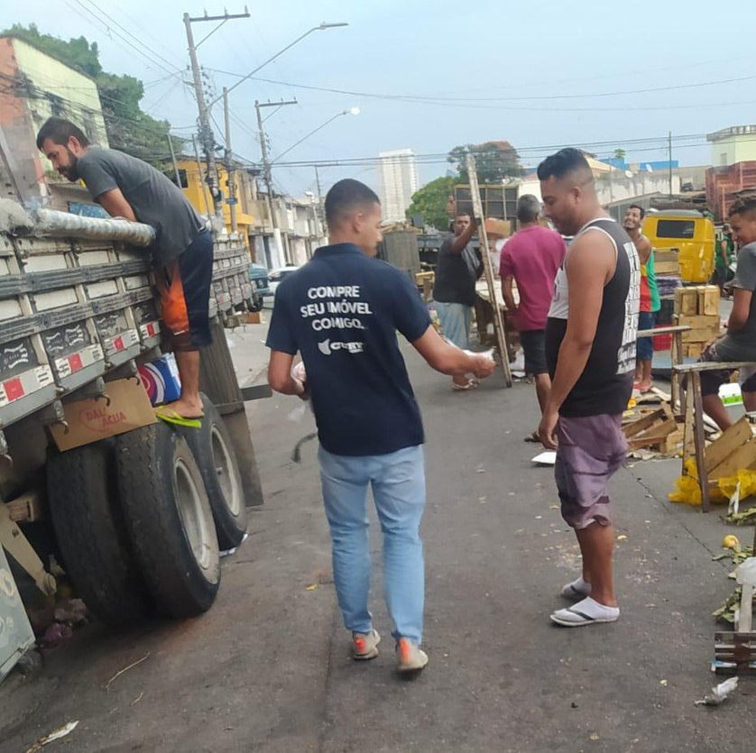
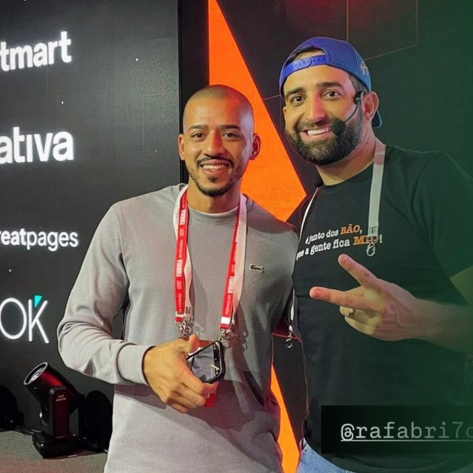

Eu errei com o meu dinheiro pra você não errar com o seu.
Empreendo há mais de 8 anos. Antes da Dom, abri e fechei cinco negócios, trabalhei em cozinha e vendi imóvel na rua. Tudo isso vira leitura prática na Reunião de Diagnóstico, comigo, sem intermediário.
Comecei a empreender aos 18 anos, vendendo camiseta na faculdade.
Eu estudava Engenharia Mecânica. Vendi algumas camisetas para colegas, o negócio não cresceu e eu ainda não sabia explicar por quê. Os anos seguintes foram a resposta, uma lição de cada vez.
-
Primeiro negócio de verdade
A tabacaria
Abri com o que eu tinha guardado. Durou menos de um ano: faltou giro de caixa e sobrou sócio sem papel definido. Fechou e levou junto o que eu tinha investido.
O que ficou: caixa e combinado entre sócios se resolvem antes de abrir a porta.
-
Cozinha
Pizzaiolo, supervisor de cozinha e uma hamburgueria
Trabalhei como pizzaiolo, virei supervisor de cozinha e mantive uma hamburgueria funcionando em paralelo. Na pandemia, saí do emprego e apostei só nela. Com dois motoboys entregando, ela começou a dar certo.
O que ficou: produto bom e entrega no prazo seguram o cliente melhor do que qualquer anúncio.
-
Sociedades
Um restaurante e uma casa de salgados
Entrei em duas sociedades seguidas. As duas acabaram por motivos parecidos: sócio sem disciplina em uma, lucro dividido entre gente demais na outra. Voltei para a hamburgueria e recomecei.
O que ficou: sociedade divide o lucro e o prejuízo, e disciplina não se negocia.
-
Vendas
Corretor de imóveis
Durante um ano, corretagem das 8h às 16h e hamburgueria até 1h30 da manhã. Fui para a rua panfletar, atendi cliente em barraca na calçada e em estande de lançamento. Vendi 14 imóveis em um ano, junto com dois parceiros de equipe, e aprendi a vender cara a cara o produto mais caro da prateleira.
O que ficou: venda de valor alto é processo, e o caixa não pode depender de comissão que ainda vai entrar.

-
Hoje
A Dom
O marketing entrou na minha vida por necessidade. O primeiro cliente foi o dono da pizzaria onde eu tinha trabalhado. Veio o segundo, depois o terceiro, e a agência virou o centro de um ecossistema de três empresas: a Dom, a Papin REC e a Yzza.
O que eu faço com tudo isso: olho o seu negócio inteiro antes de falar de marketing.
Cada negócio que fechou virou uma pergunta que eu faço no seu.
É por elas que a Reunião de Diagnóstico começa, antes de qualquer conversa sobre anúncio ou conteúdo.
Quem decide o quê?
E quem responde pelo resultado quando a meta não bate. Aprendi isso em três sociedades.
Quanto sobra de verdade?
Quanto custa cada venda, qual é a margem real e quanto tempo o dinheiro leva para entrar.
O que acontece depois do contato?
Quem atende, em quanto tempo, com qual roteiro, e onde a oportunidade esfria.
Qual rotina o time cumpre?
O que acontece na operação quando o dono não está olhando. É ali que o negócio cresce ou trava.
Estudo com quem já construiu antes de mim.
Imersões e mentorias com nomes que são referência em vendas, conteúdo e marca pessoal. Aprender com quem já fez custa menos do que errar sozinho.
Thiago Reis
Growth Machine

Rafa Brito
Criação de conteúdo
Rodrigo Vincenzi
Mentoria de marca pessoal
Reunião de Diagnóstico
Uma conversa individual comigo pra mapear com clareza onde o seu negócio trava hoje: modelo, marketing, comercial, ou os três juntos. Você sai com uma leitura honesta e uma direção de prioridade, não um discurso de vendas.
Pagamento combinado direto comigo, no agendamento. Não compromete você com nenhum plano mensal depois: você decide com calma, já com a leitura em mãos.
Agendar minha Reunião de DiagnósticoRaiz do problema
Mapeamos juntos onde a operação trava hoje: processo sem padrão, decisão no achismo em vez de dado, oferta confusa demais pro time vender com clareza.
Números reais, não achismo
Olhamos custo por venda, valor médio por venda e margem real da operação: a base concreta que sustenta, ou não, a meta que você está tentando bater.
Prioridade, com clareza
Você sai sabendo qual frente travar primeiro, comercial, marketing ou modelo de negócio, e se faz sentido seguir com uma consultoria mensal.
Depois do Diagnóstico, três formas de seguir comigo.
Consultoria mensal, preço fixo, sem comissão sobre resultado e sem taxa de entrada. Mínimo de 3 meses, tempo pra um plano sair do papel e virar rotina.
Comercial
Pra quem sente que o comercial fecha por sorte, não por processo. Vendi cara a cara o produto mais caro da prateleira antes de estruturar o método comercial que a Dom aplica hoje nos clientes da agência. Trago essa mesma leitura pro seu time: diagnóstico, roteiro e rotina de acompanhamento.
Falar sobre esse planoCombo
Pra quem precisa alinhar comercial e marketing ao mesmo tempo, porque resolver só um dos dois costuma deixar a outra metade do problema intacta. O acompanhamento das duas consultorias, numa agenda só, comigo.
Falar sobre esse planoMarketing
Pra quem precisa de clareza em posicionamento, conteúdo e tráfego antes de investir mais em anúncio. A mesma leitura estratégica que a Dom aplica hoje nos clientes da agência, aplicada direto no seu negócio.
Falar sobre esse planoDa conversa inicial à rotina mensal.
Diagnóstico
Conversa individual comigo, R$ 500, pra mapear onde o negócio trava e qual frente priorizar.
Direção
Você sai com uma leitura clara, e decide com calma se faz sentido seguir com um dos planos mensais.
Consultoria mensal
Acompanhamento direto comigo, com roteiro, processo e rotina aplicados junto com você ou seu time.
Revisão
Depois dos 3 meses mínimos, revisamos o que mudou e decidimos juntos os próximos passos.
Antes de agendar.
Não. A Dom é a agência: executa marketing, comercial, produtora e inteligência com um time dedicado, com mensalidade fixa somada a uma parte do resultado. Essa consultoria é comigo, individualmente: eu te ajudo a enxergar e estruturar o problema, com preço fixo, sem parte do resultado.
Preço fixo mensal (R$ 4.500 ou R$ 7.500, dependendo do plano), sem taxa de entrada e sem comissão sobre resultado.
Mínimo de 3 meses, tempo pra um plano sair do papel e virar rotina. Depois disso, segue mês a mês.
Não. O Diagnóstico (R$ 500) é avulso: você sai dele com clareza e decide depois, com calma, se quer seguir com um dos planos.
Faz, desde que já exista operação rodando: já vendendo algo ou com estrutura mínima. O Diagnóstico serve justamente pra dizer com sinceridade se é o momento certo, ou o que ajustar antes.